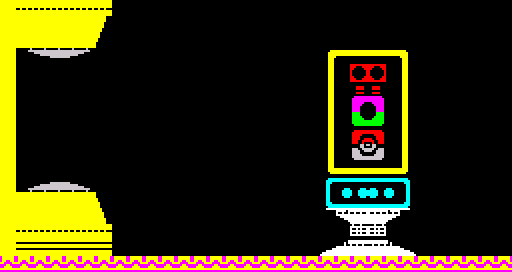

| Data |
| Prev: 51056 | Up: Map |
|

|
|||||||
| 51150 | DEFB 41,7,7,1,18,1 | Draw left half of lower transporter pad (41) with attribute data index of 7, terrain interaction data index of 7 at (1, 18), and apply vertical mirror (1) | |||||
| 51156 | DEFB 41,24,7,1,6,3 | Draw left half of upper transporter pad (41) with attribute data index of 24, terrain interaction data index of 7 at (1, 6), and apply horizontal and vertical mirrors (3) | |||||
| 51162 | DEFB 255,0,0,1,22,6,92 | Start at (1, 22) and print run of 6 characters (char. code 92) (base of transporter pad) | |||||
| 51169 | DEFB 56,18,0,20,10,0 | Draw left half of transputer panel (56) with attribute data index of 18, terrain interaction data index of 0 at (20, 10) | |||||
| 51175 | DEFB 56,18,0,23,10,1 | Draw right half of transputer panel (56) with attribute data index of 18, terrain interaction data index of 0 at (23, 10), and apply vertical mirror (1) | |||||
| 51181 | DEFB 65,0,0,20,20,0 | Draw left half of transputer panel base (65) with attribute data index of 0, terrain interaction data index of 0 at (20, 20) | |||||
| 51187 | DEFB 65,0,0,23,20,1 | Draw right half of transputer panel base (65) with attribute data index of 0, terrain interaction data index of 0 at (23, 20), and apply vertical mirror (1) | |||||
| 51193 | DEFB 251,14,14,0,7,0 | Draw wall at (0, 7) | |||||
| 51199 | DEFB 0,71,94,108 | Flood room with attribute 71 (white INK, black PAPER, BRIGHT), draw floor with attribute 94 (yellow INK, magenta PAPER, BRIGHT), and UDG 108 | |||||
| Prev: 51056 | Up: Map |